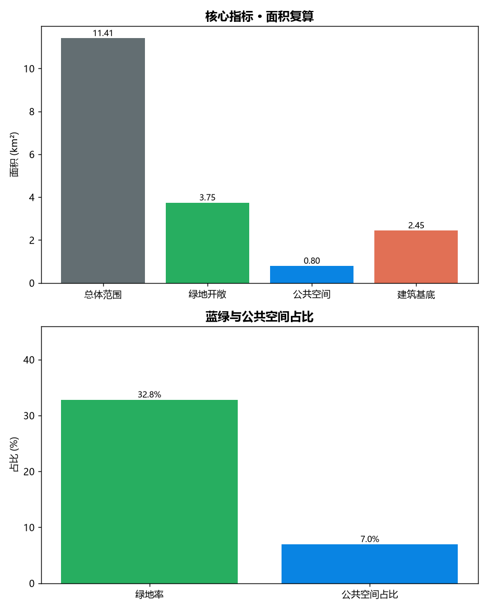

百年京张·AI原点环：从铁路文脉到开源圣地的城市设计概念方案
本方案以“百年京张”铁路文脉为母题，依托詹天佑人字形展线的空间逻辑，在总体设计范围内构建贯穿南北的“AI原点环”蓝绿创新脊，串联三处重点区域，形成可运营、可感知、可参与的AI创新带。以下为关键图示与说明。
总体结构与三层范围

用地分区

三处重点区域

交通慢行与蓝绿网络

核心指标与面积复算

说明
完整论证、依据引用、合规矩阵与分期计划见 proposal.md 与相应 JSON 矩阵。所有几何与面积均基于临时粗略边界复算，最终以官方红线与控规为准。